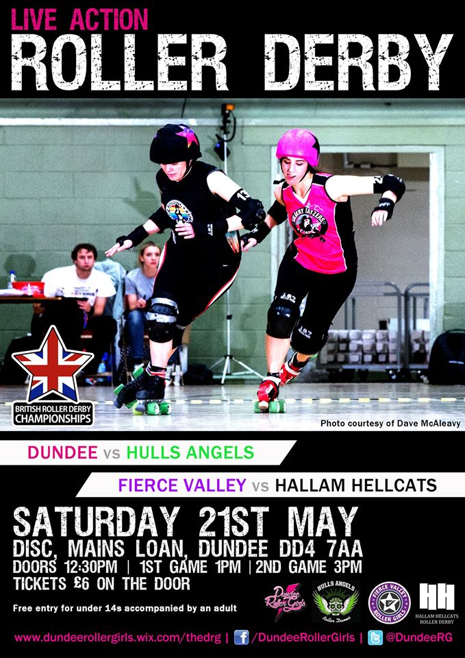

British Champs at Dundee!
As we mentioned last month, with Fierce Valley Roller Girls's hosted double header, the British Championships Tier 3 North was due a couple of fixtures in Scotland.
This Saturday, 21 May sees the second of those, as Dundee Roller Girls host a double-header at their usual venue, the Dundee International Sports Centre.

First up at 1pm will be previous hosts Fierce Valley, taking on Sheffield's Hallam Hellcats Roller Derby. As they currently reside at the bottom of the table for T3 North, this is an important bout for FVRG in order to avoid relegation at the end of the season. FlatTrackStats predicts a close-ish win for the Hellcats, however, with a 7:6 score ratio; that's close enough that an upset is still pretty possible.
Following up, starting at 3pm, the hosts will take on Hull's Angels Roller Dames. Dundee currently top the ranking table, but H.A.R.D are joint second behind them on win/loss ratio, so they'll be keen to take a win to contest for the top spot. FlatTrackStats predicts a strong win for the home team with 29:49 score ratio looking fairly comfortable for their chances of keeping the top spot in the Division, for now.
Tickets are still available online for £5 at BrownPaperTickets, or for £6 on the door. As always, merch and cake stalls will be in abundance.